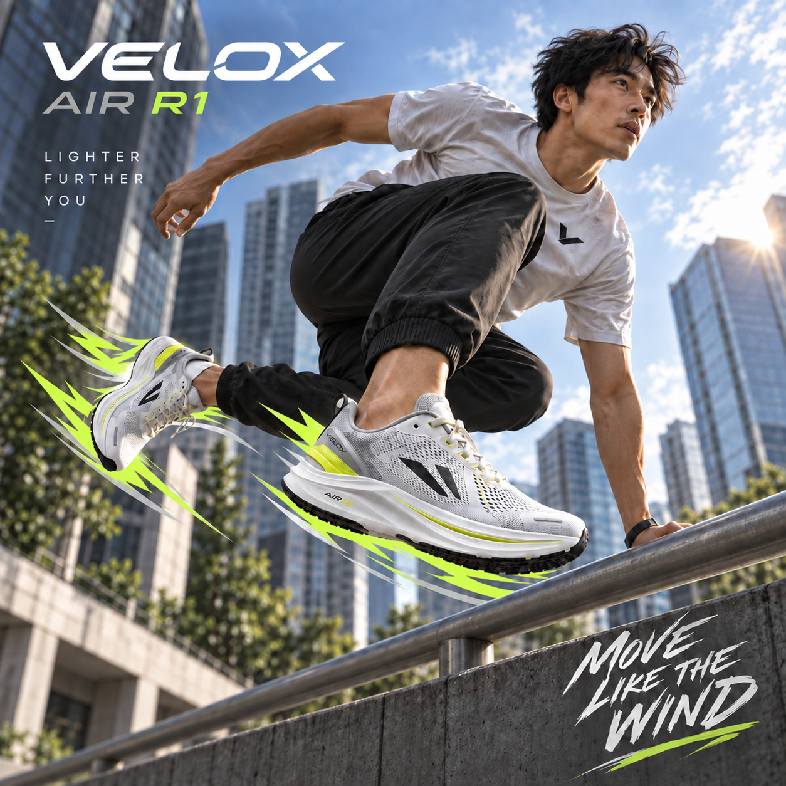
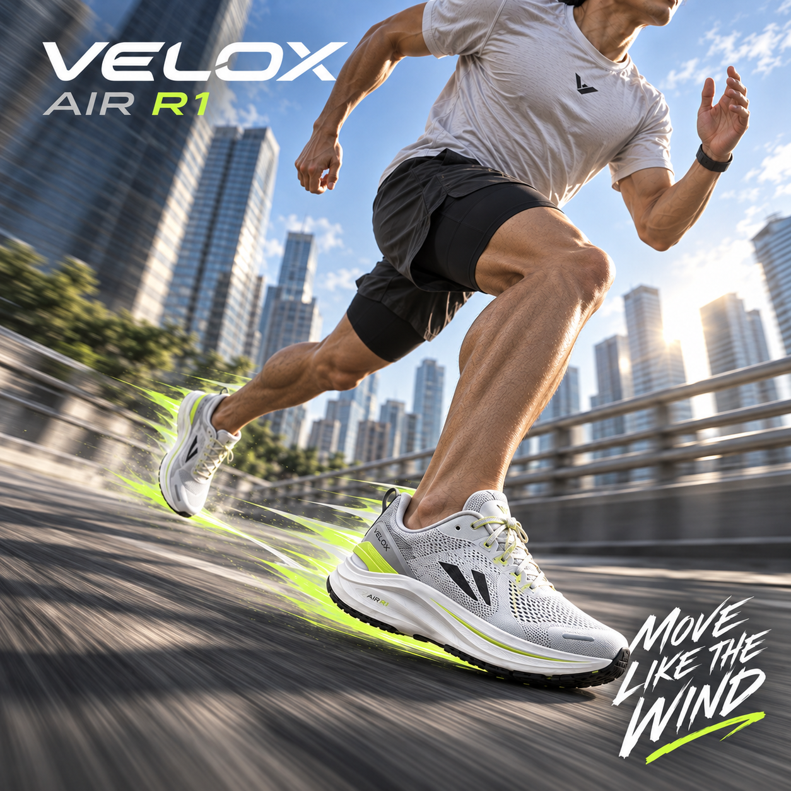
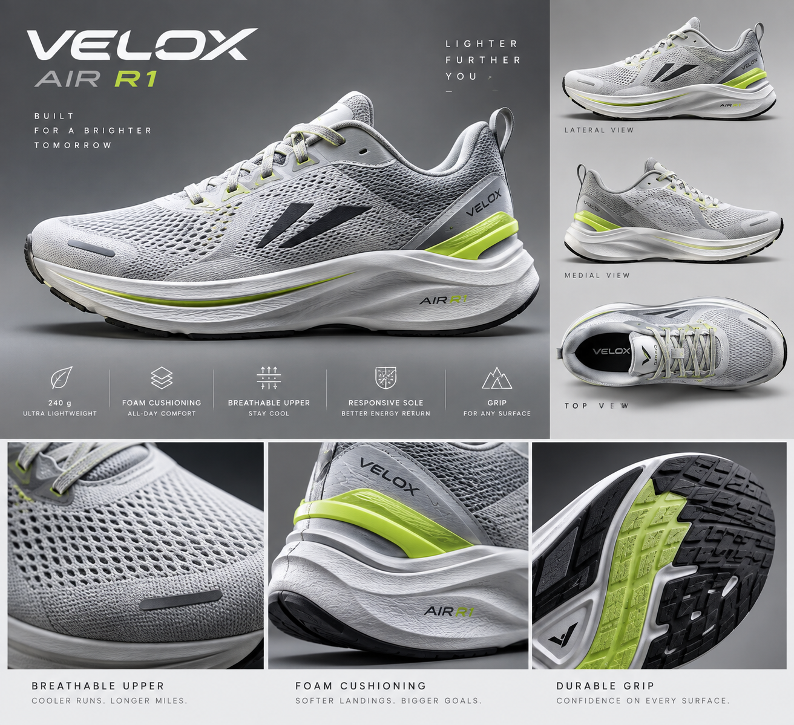
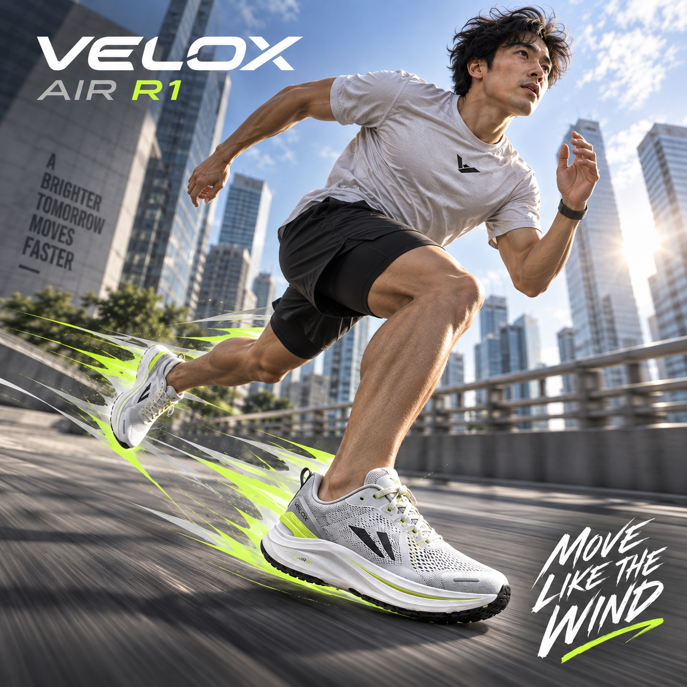

Test 01 — Parkour Direction
The first concept communicated freedom and lightness well, but the parkour movement felt too exaggerated for the product and risked implying capabilities beyond the intended use.
A running shoe campaign designed to communicate speed, lightness and effortless movement — making the viewer imagine how the shoe feels while running.

The final direction uses a natural running pose, low camera angle and a green trail to suggest airflow, speed and lightness without pushing the product into an unrealistic use case.
I wanted the shoe to feel light, comfortable and ready for movement. The image is meant to make the viewer imagine running in the product, rather than focusing only on the shoe as an object.
Motion blur and the green trail act as visual cues for speed and airflow, while the runner keeps the concept grounded in a believable athletic use case.
The reference image was used to preserve the product identity while developing a more dynamic advertising environment around it.


The first concept communicated freedom and lightness well, but the parkour movement felt too exaggerated for the product and risked implying capabilities beyond the intended use.

The second concept moved from parkour to running. The sense of speed worked better, but the runner's pose still felt unnatural and needed refinement.
The final image keeps the strongest parts of the earlier concepts — movement, motion blur and the green speed trail — while using a more natural running pose. This creates a stronger sense of speed and lightness without overpromising what the product can do.